Built to be read from the oche
Big condensed numbers, the board with hits and targets in the middle and the players at the side – readable from three metres on a TV.
- Automatic turn change when you pull your darts
- Checkout route shown in green right in the empty dart fields, tuned to your favourite double
- Two-tap correction via keypad or by tapping the board, bounce-outs included
- Visit photos: camera images of every turn with the detected tip positions
- Stadium caller with offline voice clips, sounds and celebration effects for 180s and checkouts
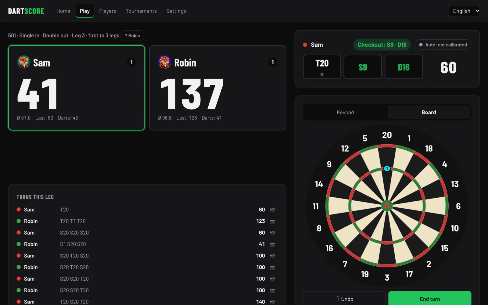
Every dart, with coordinates
Each dart is stored with its board position, so every number can be recomputed at any time – and a lot more than averages is possible.
- X01: 3-dart and first-9 average, checkout rate, best leg, 60+/100+/140+/180
- Cricket: marks per round; win/loss and head-to-head between profiles
- Heatmap and grouping from detected positions, hit rate per double
- Aim deviation: which way and how far you miss the field you aimed at
- Trends for every training mode, form curve, best and weakest games, achievements
- Export to CSV/JSON, daily database backups with restore
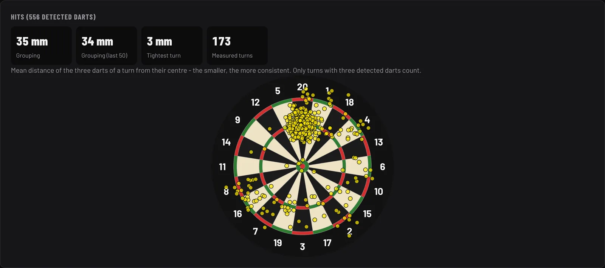
For the whole household
Any number of local profiles plus guests. A photo from the phone camera or one of 16 cartoon portraits, an optional PIN against accidental edits.
- Training plans: four built-in plans of five sessions, goals per drill, results recorded automatically
- Bots with an adjustable average – or a personal bot that throws like you
- Handicap: own start score per player so kids can keep up
- Teams sharing a score, and local tournaments (knockout with byes or round robin)
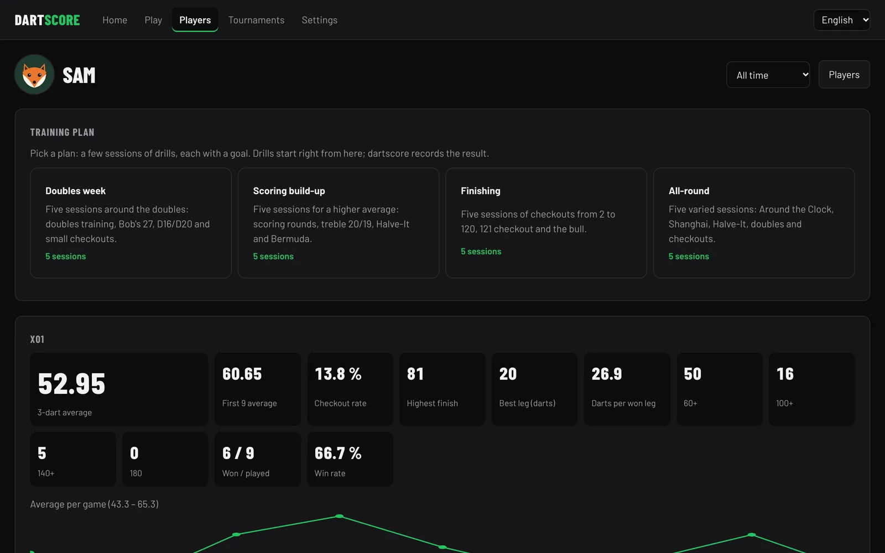
Pick your character
Sixteen 3D cartoon portraits in one style – darts jersey, three darts in hand, a background in the player's colour. Bots wear robot versions of them and never one that a player in the same game already has.
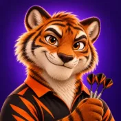
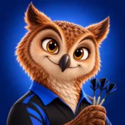
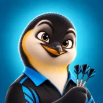
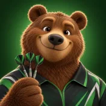
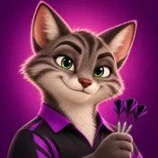
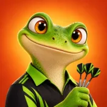
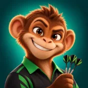
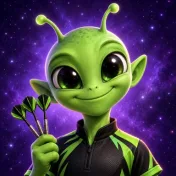
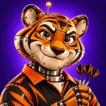
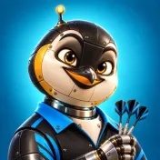
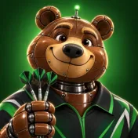
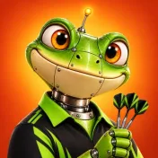